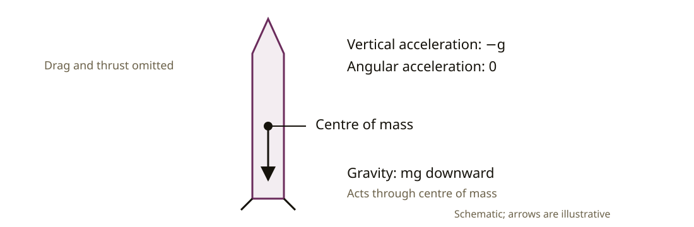

Each training row contains the rocket state and the action selected by an expert controller. We use these observations to fit a classifier.
The target is an action label. After training, we run the classifier as a controller to measure its landing performance.
Practical · inputs
Input observations
Columns, in order
Meaning
Units
x, y
Horizontal position, centre-of-mass height, relative to pad
m
vx, vy
Horizontal and vertical velocity; up is positive
m/s
theta, omega
Tilt and angular velocity; anticlockwise positive
rad, rad/s
fuel_mass
Remaining fuel
kg
actual_thrust, actual_gimbal
Current physical thrust and engine angle
N, rad
wind_x, wind_y, air_density
Local atmosphere
m/s, m/s, kg/m³
In the following equations, $h$ denotes CSV column y, and $a$ denotes an action label.
Practical · dataset
Targets and metadata
CSV field
Role
Use
action
Target $a\in\{0,\ldots,9\}$
Fit the mapping from observations to commands
run_id, step
Sequence metadata
Group observations by flight and order them by step
success
Eventual flight outcome
Use for analysis; unavailable during flight
The eventual success value is unavailable during flight. Including it as an input would leak information from the future.
Practical · evaluation
Two evaluation directions
Recorded observations
We keep the recorded observations fixed and compare the model actions with the expert labels.
We report accuracy and macro F1.
Closed-loop simulation
We apply a model action, simulate its effect, and use the resulting state for the next prediction.
We report landing success and score.
The states encountered in a model-controlled flight can differ from those in the expert recordings.
Practical · landing evaluation
Landing success criteria
At the first ground contact
Required
Geometry
A foot contacts first on the concrete pad; both feet lie within its edges
Vertical velocity
$-3\le v_y\le0$ m/s
Horizontal speed
$|v_x|\le1.5$ m/s
Tilt
$|\theta|\le4^\circ$
Angular speed
$|\omega|\le2^\circ$/s
Failed landings score 0. Successful landings score up to 100 for low speeds, small tilt and a position near the centre. We average all ten scores.
Practical · experimental method
Training and evaluation procedure
Training rows Parameter fitting
→
Tuning flights Setting selection
→
10 validation flights Evaluation
We keep the separate exercise test set for the final assessment.
Stage 1 uses a random row split, while later stages use whole flights. This comparison also changes the training observations, so it does not isolate the effect of the splitting method.
Step 1 · original implementation
Normalisation error
The original feature function recalculates column means and standard deviations whenever it is called, including for a single prediction.
For example, a training height mean of 80 m and standard deviation of 20 m transform a height of 100 m to $+1$ in training, validation and flight.
We calculate these statistics from the training features, save them with the weights, and reuse them for every prediction. The bias column is added afterwards.
Step 2 · data partition
Splitting by flight
Flight A: 0.0 s0.1 s0.2 s0.3 s
Random row split
We train on A at 0.0 and 0.2 s. We tune on A at 0.1 and 0.3 s.
The two partitions contain very similar states from the same trajectory.
Whole-flight split
We train on all of flight A. We tune on all of flight B.
This assesses performance on a different flight.
Step 3 · class frequencies
Training action frequencies
These frequencies are calculated from the whole-flight training partition. The counts and flight IDs are recorded with the figures.
Here $N$ is the number of training rows, $C$ the number of represented classes, and $n_c$ the number of rows with action $c$.
For 90 examples of A and 10 of B, the weights $100/(2\times90)=0.556$ and $100/(2\times10)=5$ give each class a total weight of 50.
Step 3 · option B
Class sampling
$P(\text{choose row }i)\propto\frac{1}{n_{a_i}}$
Alternatively, sample a class uniformly, then sample a training row from that class. Fit the sampled rows using ordinary cross-entropy.
With 90 examples of A and 10 of B, 100 draws contain about 50 of each. Rare rows can appear more than once.
Use weighting or balanced sampling here. The saved example uses weighting only; sampling has no measured result in this comparison.
Step 4 · feature construction
Projection features
A rocket at 100 m descending at 20 m/s requires a different response from one descending at 2 m/s. Height alone does not describe how quickly the state is changing.
We calculate approximate future states from the current observation and include them as additional features for the classifier.
Current state
→
State projection
→
Projected features
Step 4 · motion assumption
Constant velocity
First assume zero acceleration and zero angular acceleration. Vertical velocity and angular velocity remain constant.
For $h=100$ m and $v_y=-20$ m/s, the projected heights are $\hat h(1)=80$ m and $\hat h(2)=60$ m.
For $\theta=0.10$ rad and $\omega=-0.02$ rad/s, the projected angle is $\hat\theta(2)=0.06$ rad.
Step 4 · worked projection
Projecting to ground contact
Continuing the approximation gives a contact position, angle and velocity. The dashed part extends beyond the model's 3 s feature horizon.
Step 4 · design matrix
Projected feature vector
12 raw observations
+ 4 projected values at 1 s
+ 4 at 2 s
+ 4 at 3 s
At each horizon we append $[\hat h,\hat v_y,\hat\theta,\hat\omega]$. This gives 24 features in total, followed by the bias column.
Use 12 steps of 0.25 s, saving after steps 4, 8 and 12. If estimated contact occurs earlier, hold that state for later samples.
We normalise all 24 columns using training statistics, then add the bias. The projection runs for at most 3 s, rather than until landing.
Step 4 · contact approximation
Estimated ground contact
At each step, estimate the height of the lowest point on the hull or feet above a flat pad. This depends on the rocket's height, tilt and centre of mass.
Lowest point above pad
→
Advance 0.25 s
→
Check for contact
If a step crosses the pad surface, interpolate back to contact and hold that state for the remaining feature samples.
Because height is measured at the centre of mass, contact occurs at a positive height. This approximation does not use horizontal terrain.
Step 4 · model representation
Linear and nonlinear features
$a h+b(h+t v_y)=(a+b)h+(bt)v_y$
At a fixed horizon $t$, the unrestricted constant-velocity projection is an affine combination of inputs already available to the classifier.
The implemented transformation also includes trigonometric geometry and state-dependent stopping at contact. These operations make the feature map nonlinear.
Repeated or related columns can also change optimisation and regularisation, so improved results do not by themselves establish which part of the transformation helped.
Step 5 · force assumption
Add gravity

Gravity acts downward through the centre of mass. It changes vertical velocity and leaves angular velocity unchanged in this approximation.
The lever arm $\mathbf r$ runs from the centre of mass to the force application point. We divide the resulting torque by the moment of inertia $I$.
A force through the centre gives zero torque. Increasing the perpendicular lever arm increases torque, while increasing inertia reduces angular acceleration.
Recalculate drag each 0.25 s step. Keep the same 12-step maximum, samples and contact rule. Update $v_x$ as well, because it affects the next drag calculation.
Step 6 · projected features
Effect of drag on the projection
For this faster, tilted descent, drag changes projected height and angle. Both models still append four quantities at each horizon.
Practical · interpretation
Limitations of the comparison
There are ten flights, so one additional successful flight changes the success rate by 10 percentage points. Observations within a flight are correlated.
The selected fits reached the limit of 300 optimiser iterations without reporting convergence.
Changing the split also changes the training observations. Adding features can affect optimisation as well as the model representation.
These results describe the saved models on this validation set. We need controlled comparisons and further flights to assess the causes of the changes.